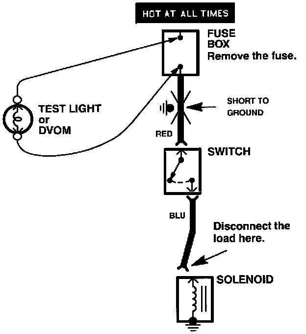

Testing For a Short to Ground With A Test Light or DVOM
Testing For A Short To Ground With A Test Light Or DVOM:

1. Remove the blown fuse and disconnect the load.
2. Connect a test light or Digital Volt/Ohmmeter (DVOM), switched to the appropriate DC volts range, across the fuse terminals to make sure voltage is present. You might have to turn the ignition switch to ON; check the schematic to see.
3. Beginning near the fuse box, wiggle the harness. Continue this at convenient points about six inches apart while watching the test light or DVOM.
4. Where the test light goes OFF, or the DVOM voltage drops to ZERO, there is a short to ground in the wiring near that point.
NOTE: Always use a DVOM on high impedance circuits. A test light may not glow (even with battery voltage present).